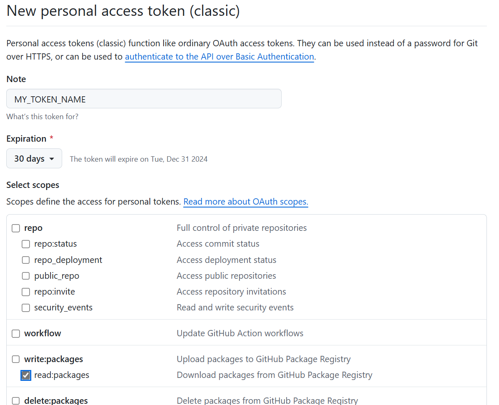
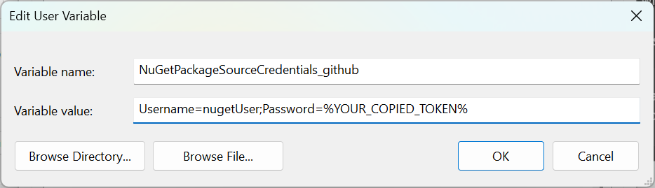
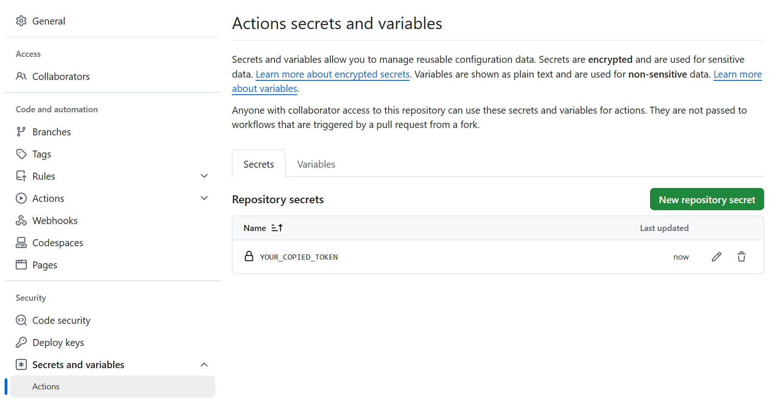

GitHub Packages allows to organize the private NuGet repository. In this note I show how to configure the private NuGet repository with GitHub Packages.
I’m considering the case when a free private account is used. For more detailed information see the documentation.
First and foremost - there are serious limitations in the free account: only 500 mb of storage and 1Gb of traffic. The traffic limit resets monthly, but the storage limit is permanent. So the primary usage is small packages for private projects. It’s better to use NuGet.org to host public packages.
For personal projects I prefer to configure NuGet package in the csproj file. In addition to the standard properies we need to set RepositoryUrl property with the URL to the project repository. This property connects the repository to the package.
In addition to configuring a package in csproj file I also use the following solution structure:
.\src
%LIB_NAME%\%LIB_NAME%.csproj << the project file
%LIB_NAME%.sln
.\target
Lib\Release\*.nuget << packages are published here
The config file relies on this structure.
The GitHub Actions contains five steps:
- Checkout the source
- Install the .NET SDK
- Add GitHub Packages to the NuGet source list (we use
githubname for this source) - Create the NuGet package
- Publish it to the GitHub Package (push to
githubsource)
YAML file for the solution structure that is presented above:
name: Publish NuGet package
on:
push:
tags:
- v[0-9]+.**
jobs:
build:
strategy:
matrix:
configuration: [Release]
runs-on: windows-latest
permissions:
contents: read
packages: write
steps:
- name: Checkout
uses: actions/checkout@v4.2.2
with:
fetch-depth: 0
- name: Install .NET
uses: actions/setup-dotnet@v4.1.0
with:
dotnet-version: 9.0.x
- name: Add "github" source
run: dotnet nuget add source --username %USERNAME% --password ${{ secrets.GITHUB_TOKEN }} --store-password-in-clear-text --name github "https://nuget.pkg.github.com/%USERNAME%/index.json"
- name: Pack
run: dotnet pack ./src/%LIB_NAME%/%LIB_NAME%.csproj -c Release
- name: Publish to GitHub packages
run: dotnet nuget push ${{ github.workspace }}\target\Lib\Release\*.nupkg --api-key ${{ secrets.GITHUB_TOKEN }} --source "github"
%USERNAME%- GitHub account name. For example, my account name is albertakhmetov
%LIB_NAME% - the name of the package project (see above).
The important part is permissions sections. We need to add packages: write and restore contents: read (as it’s erased) permissions.
This workflow runs when the version tag is pushed (i.e. v0.1.0-alpha and so on). If everything goes as planned, the package should appear in the Packages tab.
Ok, package is published to the repository. How to consume the NuGet package from GitHub Packages? There are two scenarios: building the solution on a local machine and using GitHub Actions.
For the local machine add the following NuGet.config file to the root of the repository folder (don’t forget to replace %USERNAME% with GitHub account name):
<?xml version="1.0" encoding="utf-8"?>
<configuration>
<packageSources>
<clear />
<add key="github" value="https://nuget.pkg.github.com/%USERNAME%/index.json" />
<add key="nuget.org" value="https://api.nuget.org/v3/index.json" protocolVersion="3" />
</packageSources>
</configuration>
But this isn’t enough. We need to create readonly Personal access token (classic):

We need only read:packages permission.
Don’t forget to store the generated token! It’s impossible to view it again. Only regenerate.
Storing tokens in config files isn’t safe (even if it’s a private repository). There are several ways to Consuming packages from authenticated feeds. For non-critical repositories it’s not a bad idea to use environment variables (for example, if these packages ship with the application).
We need to create the following user-scoped environment variable:
NuGetPackageSourceCredentials_github
Username=nugetUser;Password=%YOUR_COPIED_TOKEN%

Replace %YOUR_COPIED_TOKEN% with your token. You copied it, didn’t you?
At this point we can consume NuGet packages from GitHub Packages locally. Let’s configure the solution build with GitHub Actions.
To consume the package from GitHub Actions the following YAML file is used:
name: Build solution
on:
push:
tags:
- v[0-9]+.**
jobs:
build:
strategy:
matrix:
configuration: [Release]
runs-on: windows-latest
permissions:
contents: read
packages: read
steps:
- name: Checkout
uses: actions/checkout@v4.2.2
with:
fetch-depth: 0
- name: Install .NET
uses: actions/setup-dotnet@v4.1.0
with:
dotnet-version: 9.0.x
- name: Add "github" source
run: dotnet nuget update source github --username %USERNAME% --password ${{ secrets.GITHUB_TOKEN }} --store-password-in-clear-text
- name: Build
run: dotnet build ./src/%APP_NAME%/%APP_NAME%.csproj -c Release
Instead of publication we update source github - we define it in the NuGet.config file earlier.
For the testing purposes we just build a project. But in the real project this step must be replaced with preparing redistribute packages and so on.
To use GITHUB_TOKEN we need to allow access of the app repository (the repository that consumes the package) to our package. Open Package Settings and add the app repository to the Manage Actions access list with the read role. For details see the documentaion.
This method allows to control the access from one place.
Also it’s possible to use the user token. For this add the token to the repository secrets:

And replace GITHUB_TOKEN in the YAML file with your token name.
In this case the package doesn’t control the access - a token gives the access to any package.This is less secure and requires more work to manage tokens. For example, you can’t copy a token for a new repository. Just regenerate (and replace it in all repositories that use it) or create a new one every time for each repository.
That’s it.